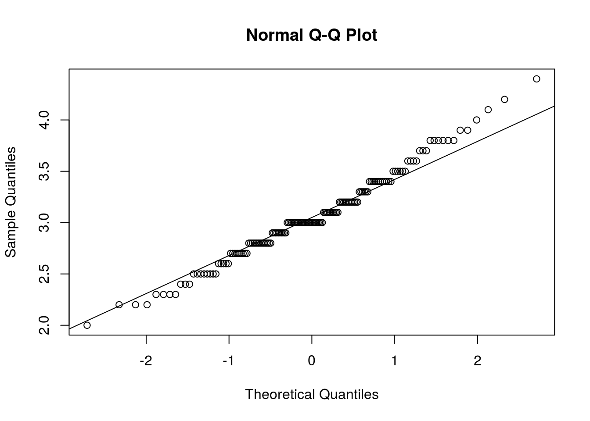
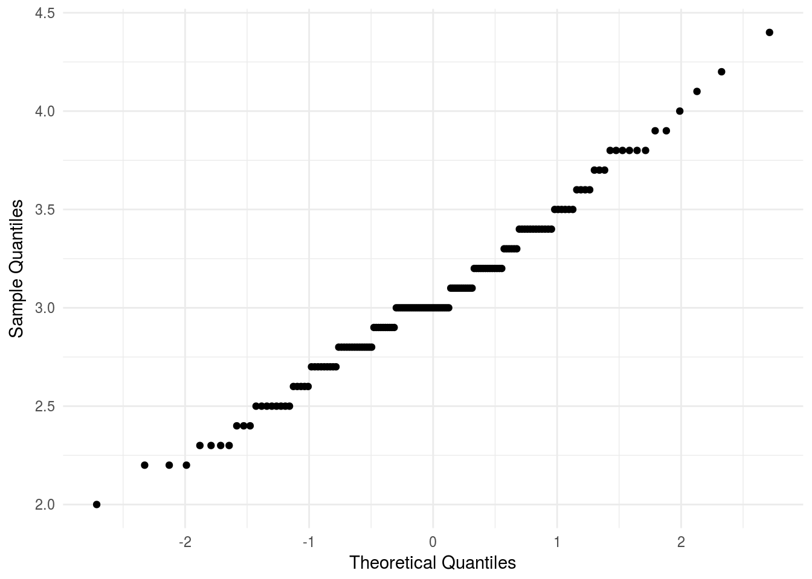
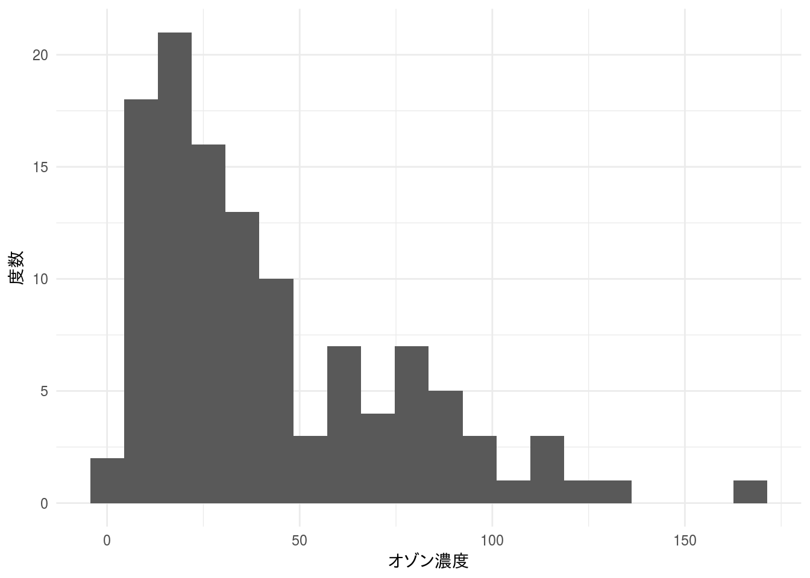

QQplot
QQプロットは二つの確率変数の分布を比較する際に使われるグラフで、横軸に観測値の期待値、縦軸に観測値を取る確率プロットです。
一般的に正規分布にしたがっているかを確認するために使われるので正規QQプロットと呼ばれることもありますが、期待値自体は任意の確率分布を適用できますので、正規分布以外の分布にしたがっているかを見ることもできます。
必要なパッケージ
本ページのコードを実行するには標準パッケージ以外に以下の追加パッケージを読み込んでおく必要があります。
| Package | Description |
|---|---|
| gridExtra | Miscellaneous Functions for “Grid” Graphics |
| tidyverse | Easily Install and Load the ‘Tidyverse’ |
| qqplotr | Quantile-Quantile Plot Extensions for ‘ggplot2’ |
対象データ
組み込みデータセットであるirisのSepal.Width（萼片幅）の分布が正規分布と言えるかどうかをQQプロットを用いて確認してみます。
iris %>%
tidyr::drop_na(Sepal.Width) %>%
ggplot2::ggplot(ggplot2::aes(x = Sepal.Width)) +
ggplot2::geom_histogram(bins = 20) +
ggplot2::theme_minimal() +
ggplot2::ggtitle("萼片幅の分布") +
ggplot2::labs(x = "萼片幅", y = "度数")萼片幅の分布はグラフから見て正規分布のように見えます。
標準パッケージを用いる方法
qqnorm(iris$Sepal.Width)
qqline(iris$Sepal.Width)
追加パッケージを用いる方法
ggplot2パッケージに含まれるggplot2::geom_qq関数は残念ながら目安となる直線や信頼区間を描画してくれませんので、判断に用いるには難しい面があります。
iris %>%
tidyr::drop_na(Sepal.Width) %>%
ggplot2::ggplot(ggplot2::aes(sample = Sepal.Width)) +
ggplot2::geom_qq() +
ggplot2::theme_minimal() +
ggplot2::labs(x = "Theoretical Quantiles", y = "Sample Quantiles")
qqplotr
そこで、便利なのがggplot2パッケージの拡張パッケージであるqqplotrパッケージです。ggplot2::geom_qq関数に比べるとコード記述の手間が若干増えますが判断の目安となる直線や信頼区間を簡単に描くことが可能です。
iris %>%
tidyr::drop_na(Sepal.Width) %>%
ggplot2::ggplot(ggplot2::aes(sample = Sepal.Width)) +
qqplotr::stat_qq_band(distribution = "norm",
dparams = list(mean = 0, sd = 1)) +
qqplotr::stat_qq_line(distribution = "norm",
dparams = list(mean = 0, sd = 1)) +
qqplotr::stat_qq_point(distribution = "norm",
dparams = list(mean = 0, sd = 1)) +
ggplot2::theme_minimal() +
ggplot2::labs(x = "Theoretical Quantiles", y = "Sample Quantiles")
層別で描く
qqplotrはggplot2パッケージの拡張パッケージですのでggplot2の機能が使えます。
gg_qq <- iris %>%
tidyr::drop_na(Sepal.Width) %>%
ggplot2::ggplot(ggplot2::aes(sample = Sepal.Width)) +
qqplotr::stat_qq_band() +
qqplotr::stat_qq_line() +
qqplotr::stat_qq_point() +
ggplot2::theme_minimal() +
ggplot2::ggtitle("萼片幅のQQプロット") +
ggplot2::labs(x = "Theoretical Quantiles", y = "Sample Quantiles") +
ggplot2::facet_wrap(~ Species)
gg_hist <- iris %>%
tidyr::drop_na(Sepal.Width) %>%
ggplot2::ggplot(ggplot2::aes(x = Sepal.Width)) +
ggplot2::geom_histogram(bins = 10) +
ggplot2::theme_minimal() +
ggplot2::ggtitle("萼片幅の分布") +
ggplot2::labs(x = "萼片幅", y = "度数") +
ggplot2::facet_wrap(~ Species)
gridExtra::grid.arrange(gg_qq, gg_hist)
## 正規分布以外との比較例 正規分布以外の確率分布ととのQQプロットを描いてみます。対象データは組み込みデータセットairqualityにあるオゾン濃度を使います。
airquality %>%
tidyr::drop_na(Ozone) %>%
ggplot2::ggplot(ggplot2::aes(x = Ozone)) +
ggplot2::geom_histogram(bins = 20) +
ggplot2::theme_minimal() +
ggplot2::labs(x = "オゾン濃度", y = "度数")
データは右に歪んだ分布になっていますので正規分布と言うには無理があります。指数分布に近いように見えますので、指数分布を用いたQQプロットを描いてみます。
airquality %>%
tidyr::drop_na(Ozone) %>%
ggplot2::ggplot(ggplot2::aes(sample = Ozone)) +
qqplotr::stat_qq_band(distribution = "exp", dparams = list(rate = 2)) +
qqplotr::stat_qq_line(distribution = "exp", dparams = list(rate = 2)) +
qqplotr::stat_qq_point(distribution = "exp", dparams = list(rate = 2)) +
ggplot2::theme_minimal() +
labs(x = "Theoretical Quantiles", y = "Sample Quantiles")
PPプロット
PPプロットは累積確率を用いた確率プロットです。横軸に累積確率の期待値、縦軸に観測値の順位に基づく累積確率をとります。QQプロットと同様にプロットが一直線に並べば、観測値は期待値の分布（任意の確率分布）にしたがっていると言えます。
iris %>%
tidyr::drop_na(Sepal.Width) %>%
ggplot2::ggplot(ggplot2::aes(sample = Sepal.Width)) +
qqplotr::stat_pp_band() +
qqplotr::stat_pp_line() +
qqplotr::stat_pp_point() +
ggplot2::theme_minimal() +
ggplot2::labs(x = "Probability Points", y = "Cumulative Probability")